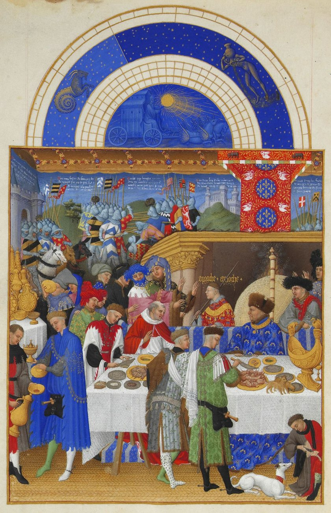

Minutes · Tuesday council周二议事记录f. 1r
Rubric reads what you send it the way a medieval scribe read a page: what matters goes in red, the hard parts get a note in the margin, and the one line worth remembering is laid in gold. 朱批替你把文档通读一遍：要紧的地方标红，难懂的地方在页边写一句批注，最该记住的那一句，贴上金箔。就像中世纪抄经人对待一页羊皮纸。

In a medieval workshop the page passed from desk to desk. Rubric keeps the same order, so the gold never lands before the reading is done.中世纪的抄经房里，一页纸要从这张桌子传到那张桌子。朱批照着这个顺序做事，没读完，就不贴金。
Reads contracts, minutes and long threads end to end before it says a word. No skimming, no guessing from the title.合同、会议记录、很长的讨论串，都从头读到尾，读完才开口。不跳读，也不看标题瞎猜。
Marks every decision, owner and date in red, and writes a short note beside anything a newcomer would trip on.每个决定、负责人和日期都标成红色。新人可能看不懂的地方，旁边写一句短短的批注。
Picks the single sentence your team must not forget and lays it in gold at the top of the page.从整份文档里挑出团队最不能忘的那一句，贴上金箔，放在页首。
Medieval books were sold by the quire. We kept the names.中世纪的书按一叠一叠来卖，我们沿用了这些叫法。
Old scribes ended a book with “explicit”: here it unrolls, here it ends. Send us a page and see where it ends for you.从前的抄经人写完一本书，会在末尾写一个 explicit，意思是“到此为止”。交一页给我们，看看你的文档批完是什么样子。